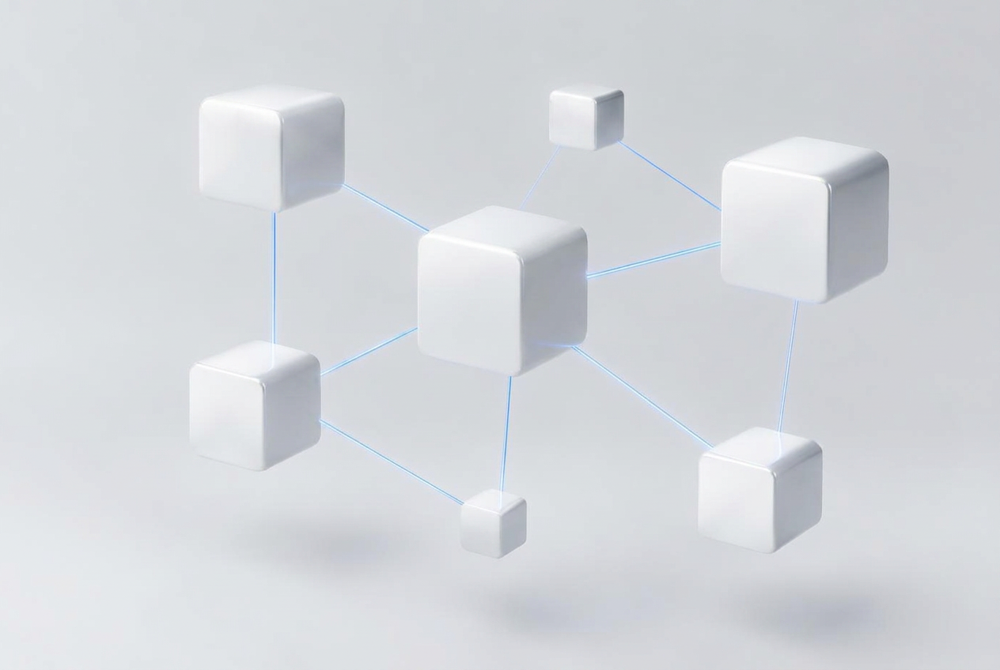
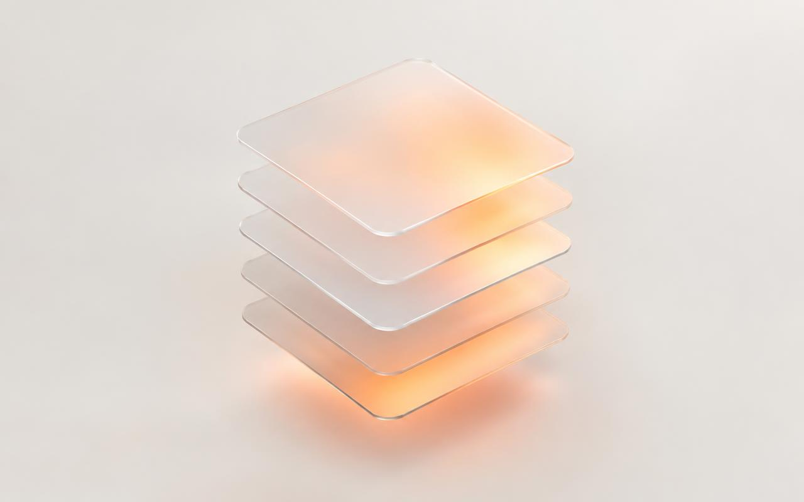

Available for opportunities
Mark Ashraf William.
Software & Support Engineer in Cairo. From microcontroller drivers to Kubernetes clusters — reliable systems at whatever layer the problem lives.
Systems that ship.
Cloud architecture
eCommerce Microservices
A production-minded commerce platform built as independent services, with automated delivery to Kubernetes and secure secret management.
Learn more ›

Full-stack product
Blog Platform
A complete publishing experience with a REST API, responsive Angular interface, image uploads, and protected role-based workflows.
Learn more ›

Data-driven application
Stocks Trading App
A market application integrating live financial data through a clean repository layer, backed by robust unit and integration testing.
Learn more ›
The full stack, literally
From register to cluster.
15 builds · 5 layers · one way of thinking.
Hardware & firmware
Registers, buses, interruptsDigital Twin of a Golf Car
Bridged a physical car and its simulator over wired, LAN, and internet links; built the CAN bus between the C2000 board and ESP32 gateway. Grade A · CyTwin Lab.
ESP32 · F28379D · CAN · Ethernet · CARLA
STM32 Drivers
GPIO, UART, SPI, I2C, and CAN drivers with clean init / config / send / receive APIs.
STM32F103C6 · Embedded C
View on GitHub ›
Microwave Controller
Mode timers, custom timer, and safety lock; wrote the LCD driver and on-screen timer.
TM4C123 · Tiva C
View on GitHub ›
Real-time & operating systems
Scheduling, concurrency, processesWindow Control System
Manual and one-touch auto, window lock, and jam protection using queues, mutexes, and semaphores.
FreeRTOS · DC motor · limit switches
View on GitHub ›
Process Scheduler Visualizer
Live and static visualizations of FCFS, SJF, Round Robin, and priority scheduling.
Java · JavaFX
View on GitHub ›
Tiny Shell
A POSIX-compliant shell running external programs and built-ins like cd, pwd, and echo.
C
View on GitHub ›
Languages & tooling
Parsing, compression, correctnessTiny Language Compiler
Scanner and parser for the TINY language with visualized tokens and parse trees.
Python · tkinter · GraphViz
View on GitHub ›
XML Toolset
XML→JSON conversion, prettifying, error correction; owned compression and decompression.
C++ · Qt
View on GitHub ›
JUnit Test Suite
Unit, integration, and system tests for a GPA calculation app.
Java · JUnit
View on GitHub ›
Algorithms, vision & security
Search, perception, cryptographyGobblet with AI
4×4 strategy game with adjustable AI difficulty, LAN multiplayer, and computer-vs-computer modes.
C++ · PyGame
View on GitHub ›
Return Rover from Mars
Autonomous rover collecting rock samples with high fidelity and path coverage.
Python · OpenCV · NumPy
View on GitHub ›
AES / RSA / 3DES Toolkit
Encryption and decryption across multiple ciphers behind a simple GUI.
Python · Cryptography · tkinter
L4 · Applications & cloud — the three featured builds above.
Engineering with an
operator’s mindset.
I’m a Computer Engineering graduate and Support Engineer at IBM. My background started in embedded systems — drivers, RTOS, CAN — and now spans backend services, cloud delivery, and enterprise operations.
Now
Support Engineer · IBM
Supporting enterprise systems across z/OS, Citrix, Microsoft 365, and Active Directory while resolving incidents against service-level targets.
Education
B.Sc. Computer Engineering
Ain Shams University. Graduation project awarded A: a digital twin for a golf car across Ethernet, WiFi, and CAN.
Silicon
Embedded C · ARM Assembly · STM32 · Tiva C · ESP32 · C2000 · CAN · UART · SPI · I2C
Systems
C++ · FreeRTOS · GDB · CMake · QEMU · OpenOCD · Bash · Makefile
Build
C# · .NET · ASP.NET Core · REST APIs · Entity Framework · Python · Java
Ship
Azure DevOps · Docker · Kubernetes · Azure Key Vault · Git
Store
SQL Server · PostgreSQL · MySQL · MongoDB · Redis
Support
z/OS · Citrix · ServiceNow · Active Directory · Microsoft 365
Let’s work together.